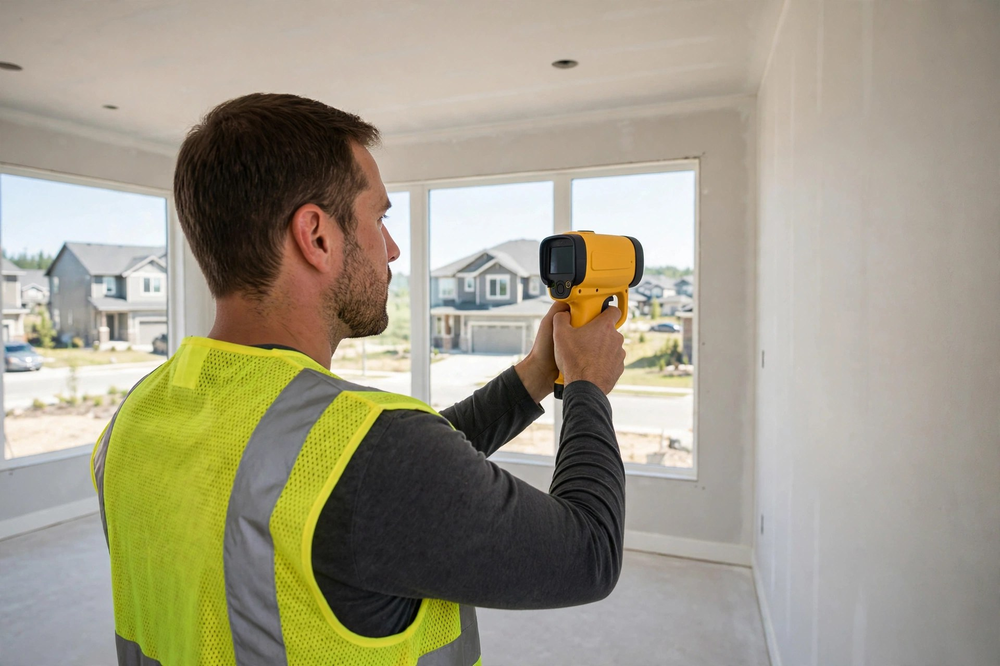
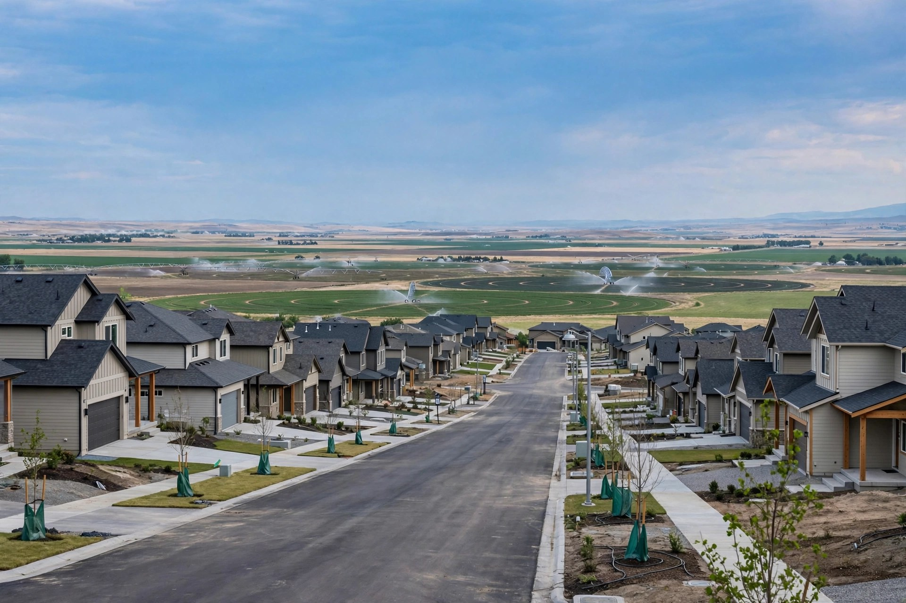

Mold Inspection in Kuna, ID
Kuna grew from farmland into subdivisions fast — and fast construction leaves moisture stories behind. An inspection finds where water has been, whether mold followed, and what to do next, before you spend on remediation.
Inside every Kuna inspection
Thermal scan of walls and ceilings
An infrared camera finds cold spots that signal moisture inside cavities — behind shower surrounds, under windows, along exterior walls.
Moisture mapping with pin meters
Every suspect area gets a reading. Numbers beat guesses: we document which materials are wet, how wet, and whether the pattern points to a leak or condensation.
Attic and crawlspace entry
Sheathing stains, damp insulation, standing water on vapor barriers — the two spaces buyers never see are where most Kuna findings live.
HVAC and bath-fan routing
We confirm exhaust ducts actually exit the building. In new subdivisions this single check catches more attic mold than any other.
Four patterns that shape a Kuna inspection
Irrigation shaped this ground for a century. Houses arrived in decades. That history shows up in inspections.
New builds
Sealed tight, dried slow — lumber enclosed before it dried, and bath fans in some builds vent into attics rather than through the roof.
Irrigation legacy
High seasonal groundwater under old pasture lots. Crawlspaces collect humidity every irrigation season, and the vapor barrier is often the first thing to check.
Well water
Extra connections in utility rooms — each fitting a future drip point, and slow seeps behind a tank can run for months unnoticed.
Runoff
Sprinkler and roof runoff slides sideways over the hardpan instead of soaking in — straight toward foundations and crawlspace vents.
Signs that call for an inspection
Musty odors
A sweet, earthy smell in a closet or bedroom.
Bath fan venting into the attic
Exhaust that never exits the roof dumps moisture overhead.
Dark staining on attic sheathing
Stains above a bathroom often point to a fan or leak problem.
Elevated moisture in an exterior wall
Meter readings that point to a leak or condensation inside the wall.
Crawlspace humidity
Former farmland lots collect humidity every irrigation season.
Slow seeps behind well-system tanks
Pressure tanks and softeners can drip for months unnoticed.
Farmland turned into neighborhoods
New builds
Sealed tight, dried slow — bath fans venting into attics.
Irrigation legacy
High seasonal groundwater, crawlspace humidity, vapor barrier.
Well water
Pressure tanks, softeners, extra connections, slow seeps.
Runoff
Caliche hardpan sends runoff toward foundations and crawlspace vents.

A walk-through, not a sales pitch
Typical scenario (illustrative example — not a past job)
A couple buying a five-year-old home near downtown Kuna notice a sweet, earthy smell in the primary bedroom closet. The inspection finds the bath fan venting into the attic, dark staining on the sheathing above, and elevated moisture in the closet's exterior wall. The report gives them a remediation scope to negotiate with — not a scare story.
Kuna inspection questions
How much does a mold inspection cost in Kuna?
Pricing depends on home size, attic and crawlspace access, and whether air or surface samples go to a lab. A straightforward single-family inspection with a written report is the baseline; adding lab samples increases it. Call for an exact quote — the inspection itself is free when you book remediation.
Should I get a mold inspection before buying in Crimson Point or Falcon Crest?
Yes, especially for resale homes. New-build warranties cover defects, not moisture history. An inspection checks the attic, bathrooms, and HVAC for staining or elevated readings that a general home inspector may note only in passing.
Do you test the air or just look around?
Both. The walk-through is visual plus moisture-meter and thermal imaging. When we need numbers — for a real-estate contingency or a health concern — we collect air or surface samples and send them to an accredited lab.
Can a new home in Kuna have mold?
It can. Tight construction traps moisture when bath fans vent poorly or a plumbing connection weeps inside a wall. New does not mean dry — it often means sealed, which makes hidden moisture harder to notice.
How long does the inspection take?
Most Kuna single-family homes take 60 to 90 minutes, including attic and crawlspace checks. You get a photo report the same day with findings and next steps.
Know before you commit
A walk-through with thermal imaging and moisture mapping costs nothing when paired with remediation — and tells you exactly what you're dealing with.
Open 24 hours · Kuna and the Treasure Valley